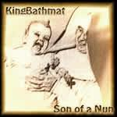

| Artist: | KingBathmat |
| Title: | Son Of A Nun |
| Label: | self produced |
| Length(s): | 47 minutes |
| Year(s) of release: | 2002 |
| Month of review: | [06/2003] |
| 1) | Unfortunate Soul | 5.27 |
| 2) | Post Traumatic | 4.06 |
| 3) | Black Horizon | 4.02 |
| 4) | The River Runs Wild | 3.43 |
| 5) | Uncle Remus | 4.08 |
| 6) | Virtual Cartoon | 3.24 |
| 7) | King Of The Fairies | 2.10 |
| 8) | Not Born To Share | 4.05 |
| 9) | Beg & Steal | 3.34 |
| 10) | Asking The Gods | 4.30 |
| 11) | Weather The Storm | 4.02 |
| 12) | No Compromise | 3.45 |
Post Traumatic is combines rather flat verses with an emotionally sung chorus. King Bathmat can not really be called progressive, although the music does seem eclectic by its influences and combination of styles. We are mainly talking singersongwriter here, with some links to the pop/rock side of Mostly Autumn. On this track, the music reaches punk rock energy levels.
Black Horizon is another one with a good vocal melodie in the chorus. The verses are usually a bit less memorable. The guitar work is also very nice giving the song a kind of urgency. The drum work is more modern here than earlier, freeer, looser. My impression of the production is that it is rather bare. It might as well have been a live album I am listening to. It does not have any negative effect on how the music comes out. I guess that is also an advantage of the type of music. The song ends on a psychedelic note.
Rock returns on The River Runs Wild. This might as well have been a Britpop track, there is no denying your heritage. But it does still harbour the zweepy keys that make things get closer up to a band like King Black Acid (probably also one with which John Bassett himself is not familiar). In some ways this is plain rock with good melodies, viewed in another way the way it is being played makes it interesting.
One of the stronger tracks is Uncle Remus. A melodic track, slow, but with a sad and mysterious edge to it. The faster vocal passage is akin to Robbie Williams. A great atmosphere on this one. Notwithstanding the hillbilliness of the title, this song seems to be about selling your soul as an artist.
Opening with organ, Virtual Cartoon is an energetic affair, but it is rather plain rock. The song is okay though, especially the vocal melodies of the second parts of the verses.
King Of The Fairies is folky jig on guitar. Not Born To Share starts in a fashion similar to the opening track. The typical elements can now be recognized. The voice, the thoughtful lyrics, the zweepy keyboards, the rock guitar (which keeps itself a bit hidden on this one). The carnival keyboards stay throughout. A waltzy tune, in a way the music can be likened to the music of Geoff Mann. The guitar solo is very nice.
After the waltz runs down we are into Beg & Steal. A warbly organ features in the opening here, which has a vaguely Arabic feel. A good song again.
With Asking The Gods we are offered more of the same: weird reversed effects on keyboards, a raucous guitar, some nice melodic organ and overall a psyche feel. The ending is very waltzy, a bit retro as well. Nice melodies again there, the vocals sound a bit slurred.
It is not surprising that Weather The Storm opens with storm sounds. Again, the song sticks well in your head, with a certain lightness in places. In other places, the guitar behaves like a cloud of angry bees.
The final track No Compromise might remind of Coldplay, the vocals go up in that fashion that also occurs with the vocalist of Coldplay. Bassett's music might be lacking a lot of money for a good studio, but he also has the advantage that his music is more easy to like. It has a certain charm.